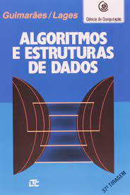
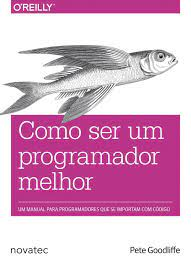
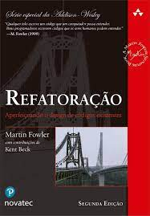
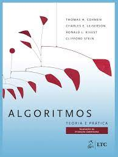

Sumário
1. Algoritmos e Estruturas de Dados
Algoritmos e Estruturas de Dados destina-se aos módulos básicos de cursos de programação de computadores, possibilitando ao leitor criar uma disciplina de programação e dispor de uma ferramenta para especificação e desenvolvimento de algoritmos.
2. Padrões de Projeto: Soluções reutilizáveis de software orientado à objetos
Clássico da Gang of Four que definiu e formalizou os padrões de software mais conhecidos e utilizados da indústria. Essa é uma referência obrigatória em qualquer disciplina de padrões de projeto em faculdades mundo afora, é um livro denso e não recomendado para iniciantes em software, mas que é livro de cabeceira para programadores plenos e sêniors que buscam se tornar ainda melhores.

3. Código Limpo: Habilidades Práticas do Agile Software
Mesmo um código ruim pode funcionar. Mas se ele não for limpo, pode acabar com uma empresa de desenvolvimento. Perdem-se a cada ano horas incontáveis e recursos importantes devido a um código mal escrito. O especialista em software, Robert C. Martin, apresenta um paradigma com 'Código limpo - Habilidades Práticas do Agile Software'. Aprenda a ler códigos e descubra o que está correto e errado neles. Reavalie seus valores profissionais e seu comprometimento com o seu ofício.

4. Como Ser Um Programador Melhor
Pete Goodliffe, autor de Code Craft, apresenta um conjunto de técnicas e abordagens úteis para a arte da programação que irá ajudá-lo a impulsionar a sua carreira e a melhorar o seu bem-estar. Goodliffe apresenta conselhos sólidos, aprendidos em 15 anos de programação profissional.
5. Use a Cabeça! Padrões de Projetos
Os padrões de projetos permitem que você aproveite as melhores práticas e a experiência de outros. As lições aprendidas por aqueles que se depararam com os mesmos problemas de desenvolvimento de software. De uma forma que o tornará mais apto para resolver problemas de desenvolvimento de software e mais eficiente para discutir a linguagem dos padrões com outros membros da sua equipe.

6. Refatoração: Aperfeiçoando o Design de Códigos Existentes
Por mais de vinte anos, programadores experientes no mundo inteiro contaram com o livro Refatoração de Martin Fowler para aperfeiçoar o design de códigos existentes e melhorar a manutenibilidade do software, assim como para deixar o código existente mais fácil de entender. Refatoração 2ª edição contém um catálogo atualizado das refatorações e inclui exemplos de código JavaScript bem como novos exemplos funcionais que demonstram a refatoração sem classes. Assim como na edição original, este livro explica o que é refatoração, por que você deve refatorar, como reorganizar um código que precise de refatoração e como fazer isso de forma bem-sucedida, independentemente da linguagem usada.
7. TDD: Desenvolvimento Guiado por Testes
A metodologia TDD se une às suas demais invenções de Kent Beck, como a metodologia ágil XP, para nos trazer um mindset completamente oposto ao usual de programar > testar para testar > programar, focando o desenvolvimento nos requisitos do usuário e programando de “fora pra dentro”. Este é um framework fácil de entender e muito difícil de ser dominado, semelhante ao que se enfrenta ao adotar o Scrum, mas mais específico ao desenvolvimento de software em si.
8. Algoritmos: Teoria e Prática
Muito usado por diversos professores ao redor do mundo para ensino de algoritmos em faculdades, o autor Thomas Cormen é uma lenda quando o assunto é este tópico. Note que nenhum dos livros fala de alguma tecnologia específica como Java ou C#, mas sim de conceitos e técnicas mais amplas, que são úteis a todos os programadores.
9. Arquitetura Limpa: O guia do artesão para estrutura e design de software
As regras universais de arquitetura de software aumentam dramaticamente a produtividade dos desenvolvedores ao longo da vida dos sistemas de software. A Arquitetura Limpa de Martin não é só mais um catálogo de opções. Com base em meio século de experiência nos mais variados ambientes de software, Martin indica as escolhas que você deve fazer e explica por que elas são cruciais para o seu sucesso. Como já era esperado do Uncle Bob, este livro está cheio de soluções simples e diretas para os desafios reais que você enfrentará — aqueles que irão influenciar diretamente o sucesso ou fracasso dos seus projetos.